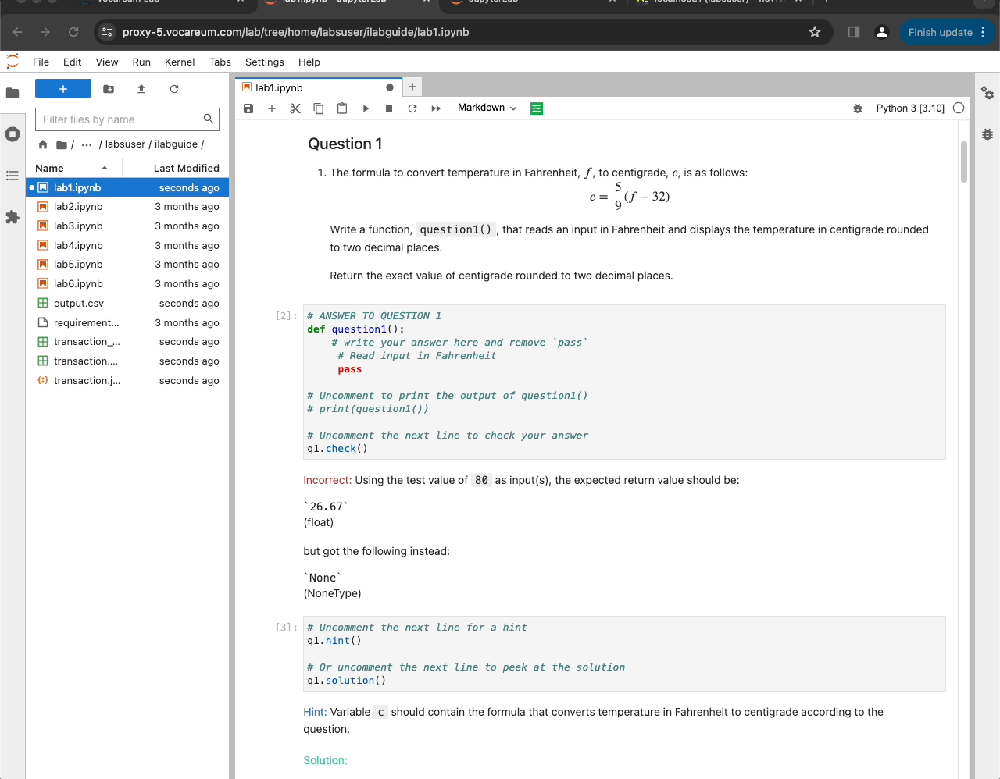

FAQ - Virtual Lab Benefits
Here are some key benefits of virtual lab that each course or programme will gain when they adopt virtual lab.
Table of contents
- 0. Virtual Lab numbers
- 1. Course Enhancement with Lab Guide and Autograding
- 2. Unified Teaching and Learning Platform
- 3. Remote Access for Lecturers
- 4. Pre-course app installation
- 5. Virtual Lab Support
- 6. Continuous Technology Updates
- 7. Personalized Learning and Analytics (Upcoming)
- 8. GUI Support in Container Labs
- 9. File Management
- 10. AI integration (Upcoming!)
- 11. Automatic LTI integration with Canvas
0. Virtual Lab numbers
Virtual Lab is supporting over 15 modules at SUSS.
As of 2 April 2024, Programming Lab guide is supporting over 1000 students across three programming modules - ICT133, ICT162 and ICT233. Virtual Lab is run by EMR under Learning Services Cluster.
1. Course Enhancement with Lab Guide and Autograding
Include Python and LabGuide in your course to allow students to independently learn and progressively enhance their skills through self-service.
Installation for each course is handled by the virtual lab team.

2. Unified Teaching and Learning Platform
Vocareum uses Ubuntu within a Docker environment, ensuring uniformity across teaching and learning platforms for both lecturers and students.
For more details, visit the SUSS VLI FAQ page on Vocareum https://suss-vli.github.io/faq/vocareum/#downloading-from-jupyterlab-ide
3. Remote Access for Lecturers
Lecturers can remotely access students’ Vocareum workspaces for support, accessible through the dashboard.
4. Pre-course app installation
The Virtual Lab team prepares by installing and setting up necessary applications and dependencies, supporting a wide range of tools including
- Jupyter Lab
- Vscode
- MySQL database
- MongoDB database
- R
- AWS learning lab
- Azure lab services
- Python packages like
seaborn,pandas,skilearn,matplot,beautifulsoup,numpyand more libraries. - Custom codeserver (vscode-like) extension via Open vsx registry
- GUI applications
- Autograding via Jupyter Notebooks
5. Virtual Lab Support
For programming and platform support, contact the in-house devops team at vlisupport@suss.edu.sg.
6. Continuous Technology Updates
Virtual Lab regularly updates to the latest technologies, maintaining a consistent standard across courses.
7. Personalized Learning and Analytics (Upcoming)
Gain Insights into lab guides and student data will be available through Kibana/ELK stack, providing valuable feedback to lecturers.
8. GUI Support in Container Labs
Enable GUI-based courses through the Ubunu/Linux interface. This is an option on top of the usual vscode interface that the lecturers can select.
9. File Management
Files can be uploaded via Vocareum’s file tree or VSCode file upload feature.

For more details, please see https://suss-vli.github.io/faq/vocareum/#how-do-i-upload-my-work-to-vocareum
10. AI integration (Upcoming!)
11. Automatic LTI integration with Canvas
Virtual Lab works in Canvas and the class list will automatically loaded via LTI.